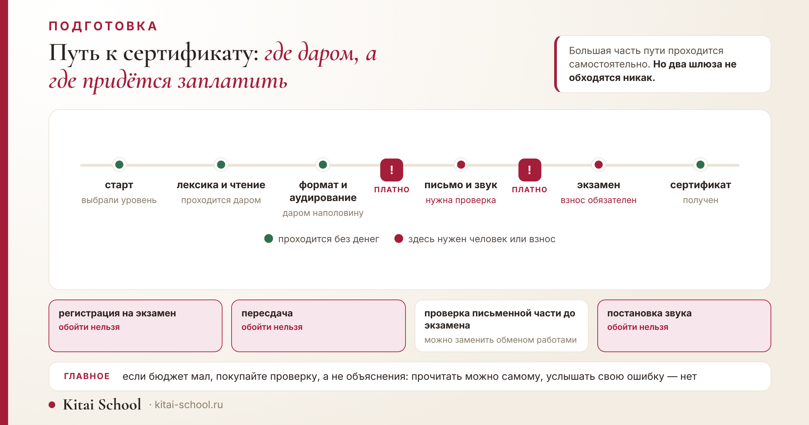
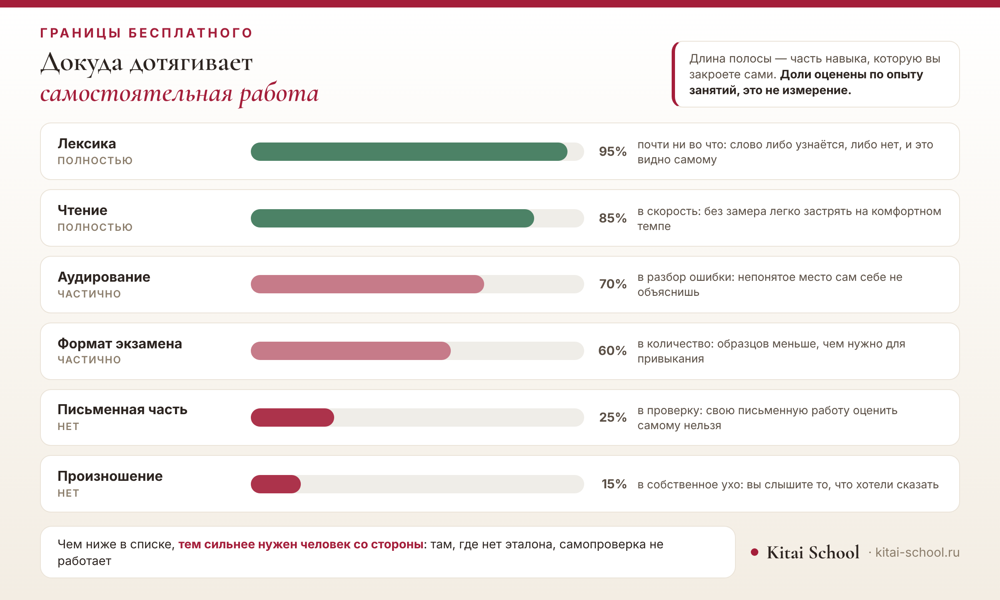

Подготовка
Бесплатное обучение китайскому под HSK 3.0: что реально даётся даром, а за что придётся платить


Начну с того, о чём обычно умалчивают страницы с таким заголовком. Сдать экзамен бесплатно нельзя: регистрация платная, и это не обходится никак. Всё остальное — вопрос того, какую часть подготовки вы готовы вытянуть сами.
А часть эта большая. Ниже разберём по навыкам: что закрывается даром целиком, что наполовину и что не закрывается вовсе, — и сколько такой путь стоит в часах.
Короткий ответ: совсем бесплатно не выйдет
Деление простое и держится на одном признаке. Там, где есть эталон, с которым вы сверяете себя, преподаватель не обязателен. Там, где эталоном служит другой человек, бесплатное заканчивается.
У слова эталон — обратная сторона карточки. У текста — словарь и перевод. У задания из образца — ключ с ответами. А вот у вашего собственного произношения эталона нет: вы слышите то, что хотели сказать, а не то, что произнесли. Эту границу подробно разбирает соседняя статья: что можно выучить самому, а что нет.
Четыре места, где придётся заплатить
Соберу их сразу, чтобы дальше говорить только о бесплатном.
| Что | Почему платно | Можно ли обойти |
|---|---|---|
| регистрация на экзамен | платная всегда | обойти нельзя |
| пересдача | оплачивается заново | обойти нельзя |
| проверка письменной части до экзамена | нужен человек | можно заменить обменом работами |
| постановка звука | нужен человек | обойти нельзя |
Регистрация и пересдача не обходятся ничем: это взнос за сам экзамен. Сумму я здесь не называю — она зависит от центра и года, и устаревшая цифра в статье хуже, чем её отсутствие.
Постановка звука — единственный пункт, где я не вижу бесплатной замены вообще. Запись себя на диктофон помогает наполовину: вы слушаете её тем же ухом, которое и не услышало ошибку в первый раз.
А вот проверку письменной работы частично заменить можно — обменом с другим изучающим. Это хуже проверки преподавателем, но лучше, чем ничего: чужой текст вы читаете трезвее, чем свой, и наоборот.
Что закрывается даром полностью
Два навыка из шести вытягиваются самостоятельно почти целиком, и это ровно та часть, на которую уходит больше всего времени.
Лексика. Списки слов, карточки, повторение по расписанию — всё это не требует ни денег, ни собеседника. Слово либо узнаётся мгновенно, либо нет, и это видно вам самому лучше, чем кому-либо.
Чтение. Тексты своего уровня и разбор со словарём. Единственное, во что упирается самостоятельное чтение, — скорость: без замера легко застрять на комфортном темпе и не заметить этого. Лечится секундомером.
Вместе эти два навыка — большая часть подготовки к любому уровню. Если вы закрываете их сами, оплачивать остаётся немного.
Почему это работает именно здесь. И лексика, и чтение устроены так, что ошибка видна сразу: слово либо вспомнилось, либо нет, предложение либо сложилось, либо осталось набором знаков. Обратная связь приходит в ту же секунду и не требует посредника.
С остальными навыками не так. В аудировании вы не всегда понимаете, что именно не расслышали — слово, которого не знаете, или знакомое слово в беглой речи. В письме ошибка может быть не в том, что написано неверно, а в том, что написано не то. Такую разницу сам себе не объяснишь.
Отсюда рабочее правило распределения денег. Если бюджет ограничен, его не стоит размазывать на регулярные занятия по всему. Полезнее оставить себе всё, где есть эталон, и купить только то, где его нет.
Докуда дотягивает бесплатное
Вот как это выглядит по всем шести навыкам сразу.

| Навык | Закрывается даром | Чем именно | Где упирается |
|---|---|---|---|
| Лексика | полностью | списки слов, карточки, повторение по расписанию | почти ни во что: слово либо узнаётся, либо нет, и это видно самому |
| Чтение | полностью | тексты своего уровня и разбор со словарём | в скорость: без замера легко застрять на комфортном темпе |
| Аудирование | частично | записи, подкасты, повторное прослушивание знакомого | в разбор ошибки: непонятое место сам себе не объяснишь |
| Формат экзамена | частично | образцы заданий и прогоны по времени | в количество: образцов меньше, чем нужно для привыкания |
| Письменная часть | нет | образцы и чужие проверенные работы | в проверку: свою письменную работу оценить самому нельзя |
| Произношение | нет | запись себя на диктофон и сравнение с эталоном | в собственное ухо: вы слышите то, что хотели сказать |
Доли на полосах — моя оценка по опыту занятий, а не чьё-то измерение. Я привожу их не как точные числа, а чтобы показать порядок: разница между лексикой и произношением здесь принципиальная, а между аудированием и форматом — нет.
Где оно упирается
Два навыка в самом низу списка и дают ту самую границу.
Письменная часть. Отдельное слово или конструкцию вы сверите. Целый текст — нет: в нём оценивается связность, уместность и то, чего вы не написали. Образцы чужих проверенных работ помогают понять планку, но собственная работа остаётся неоценённой.
Произношение. Здесь бесплатного решения просто нет: диктофон даёт половину, потому что запись вы слушаете тем же ухом.
Чем я заменяю платное, когда денег нет
Ученица пришла с необычной просьбой: не занятий, а проверки. Денег хватало на одну встречу в месяц, и тратить её на объяснение грамматики, которую можно прочитать самой, она не хотела.
Мы построили работу так. Три недели она занималась бесплатно и одна: набирала лексику, читала тексты своего уровня, проходила образцы заданий по секундомеру. Всё это не требует ни денег, ни собеседника — у каждого такого упражнения есть эталон, с которым можно сверить себя.
Встречу раз в месяц мы тратили только на то, что она проверить не могла: письменную работу и звук. Она приносила тексты, написанные за месяц, и читала вслух; я правила.
За полгода она закрыла уровень. Потратила при этом меньше, чем стоит месяц обычных занятий, — и, что важнее, не потратила ни одной оплаченной минуты на то, что умела делать сама.
Оговорюсь честно: так получается не у всех. Схема требует дисциплины, которой у большинства нет, — три недели подряд работать одному, без расписания и без человека, который ждёт домашнее задание. Половина тех, кому я это предлагала, возвращались к обычным занятиям именно по этой причине, а не из-за языка.
Вывод, который я делаю: бесплатное закрывает ту часть подготовки, где есть эталон для сверки, и не закрывает ту, где эталоном служит другой человек.
Списки лексики: официальный против народного
Главная ловушка бесплатных материалов выглядит безобидно: вы скачиваете список слов и учите его полгода.
| На что смотреть | В чём дело | Что делать |
|---|---|---|
| списки лексики из сети | встречаются народные версии, собранные читателями | сверять с официальным описанием уровня |
| готовые «полные» наборы заданий | их авторство обычно не указано | использовать как тренажёр, а не как эталон |
| курсы «бесплатно навсегда» | обычно бесплатна только первая часть | смотреть, где начинается оплата |
Как отличить. Составители народных списков обычно честно пишут, что список собран читателями и официальным не является. Настораживать должно обратное — когда источник не указан вовсе, а список подан как единственно верный.
Проверять стоит не весь список, а его края: несколько слов из начала и несколько из конца сверить с официальным описанием уровня. Если расхождений нет, списком можно пользоваться как рабочим.
И ещё: словники пересматриваются. Список, выложенный пару лет назад, мог устареть целиком — это отдельная причина сверять, а не доверять.
Образцы заданий: сколько их и чего в них нет
Образцы заданий центр тестирования публикует — это нормальная практика для любого экзамена. Сколько их сейчас выложено и в каком виде, я утверждать не берусь: портал экзамена из моей рабочей среды не открывается, а пересказывать чужие описания как свою проверку нечестно.
Что я могу сказать уверенно: официальных образцов всегда меньше, чем нужно для привыкания к формату. Их хватает, чтобы понять устройство заданий, и не хватает, чтобы натренировать скорость.
Дальше начинаются сборники, собранные кем угодно. Пользоваться ими можно — как тренажёром, но не как эталоном: расхождение с настоящим экзаменом вы заметите только на экзамене.
Сколько времени стоит бесплатная подготовка
Это честный размен, и считать его нужно в часах.
Самостоятельная подготовка занимает заметно больше времени, чем та же подготовка с преподавателем, и уходит оно не на язык. Уходит на поиск материалов, на проверку того, что нашли, на самопроверку и на возвращение к тому, что сделали неправильно месяц назад.
Точных цифр я не назову — они слишком зависят от человека. Но порядок такой: там, где с преподавателем уходит час, самостоятельно уходит полтора-два, и это нормально, а не признак неспособности.
Есть и обратная сторона, о которой стоит сказать. Эти лишние часы тратятся не впустую: разбираясь сам, человек запоминает прочнее, чем когда ему объяснили. Самостоятельная работа медленнее, но то, что в ней усвоено, держится дольше.
Вопрос поэтому не в том, дешевле ли бесплатное. Вопрос в том, есть ли у вас эти лишние часы — и дисциплина, чтобы проводить их за столом без человека, который ждёт домашнее задание.
План бесплатной подготовки
- Узнать свой уровень и порог. Без этого не ясно, сколько слов набирать. Пороги у нас разобраны отдельно: система оценки HSK.
- Взять список лексики и проверить его края. Полдня работы, которая экономит месяцы.
- Набирать слова ежедневно, маленькими порциями. Это та часть, где бесплатное работает лучше всего.
- Читать тексты своего уровня с секундомером. Раз в две недели замерять скорость на одном и том же тексте.
- Пройти официальные образцы по времени. Не для баллов, а чтобы снять удивление от формата.
- Найти проверку для письма и звука. Обмен с другим изучающим, редкие платные встречи — но не пропускать совсем.
Если денег мало, тратить их нужно не на объяснения, а на проверку. Грамматику можно прочитать самому, а вот услышать свою ошибку — нет.
Шестой пункт и отличает подготовку от имитации подготовки. Первые пять можно делать годами и не узнать, что произношение не разбирают носители.
Частые ошибки
- Считать, что бесплатно — значит полностью. Регистрация платная, и это выясняется в самый неподходящий момент.
- Учить список, не проверив его. Народный словник может разойтись с официальным настолько, что часть работы пропадёт.
- Тратить редкие платные встречи на грамматику. Её можно прочитать. Проверку — нельзя.
- Не замерять скорость чтения. Самая незаметная потеря: кажется, что читаешь, а темп стоит на месте.
- Откладывать звук «на потом». Переучивать произношение дороже, чем поставить сразу. Что именно ставят на занятиях по звуку, у нас разобрано отдельно — ссылка есть в статье про самостоятельное изучение: как изучить китайский самостоятельно.
Чего в статье нет намеренно
- Названий сайтов, приложений и каналов. Мы не ставим внешних ссылок, а рекомендовать то, что я не проверила лично, не стану.
- Стоимости экзамена. Зависит от центра и года; устаревшая цифра хуже её отсутствия.
- Утверждения, что официальные образцы лежат там-то. Портал из рабочей среды не открылся.
- Даты публикации нового словника. Описания расходятся, и уверенно я её не назову.
- Разбора уровней 3.0. Девять уровней, переход и сроки — в статье про сертификат HSK.
- Методики самостоятельного занятия. Как устроить неделю и из чего состоит одно занятие — здесь: как изучить китайский самостоятельно.
Если нужна именно проверка, а не занятия — так тоже можно. Мы разбираем письменные работы и звук точечно, не заставляя оплачивать то, что вы делаете сами.
Приходите на пробное занятие — посмотреть форматы можно здесь: онлайн-курсы китайского.
Частые вопросы (FAQ)
Можно ли подготовиться к HSK 3.0 бесплатно?
Подготовиться — в значительной части да, сдать — нет. Регистрация на экзамен платная в любом случае, и обойти это нельзя. А вот лексику, чтение и работу с форматом действительно можно закрыть самостоятельно и без денег.
За что придётся заплатить обязательно?
За регистрацию на экзамен и, если не набрали порог, за пересдачу — она оплачивается заново. Ещё деньги понадобятся там, где нужен человек: поставить произношение и проверить письменную работу самому не выйдет.
Что из подготовки закрывается даром полностью?
Лексика и чтение. У обоих есть эталон, с которым вы сверяетесь сами: у слова — обратная сторона карточки, у текста — перевод и словарь. Там, где есть с чем сверить себя, преподаватель не обязателен.
Почему письменную часть нельзя проверить самому?
Потому что эталона нет. Вы можете сверить отдельное слово или конструкцию, но не целый текст: в нём оценивается связность, уместность и то, что вы не сказали. Чужую проверенную работу посмотреть полезно, но своя остаётся непроверенной.
Как отличить официальный список лексики от народного?
Смотрите, кто его собрал и что об этом написано. Составители народных списков обычно честно предупреждают, что список неофициальный. Если источник не указан вовсе — это повод насторожиться и сверить список с описанием уровня.
Сколько времени занимает бесплатная подготовка?
По моему опыту она занимает заметно больше часов, чем подготовка с преподавателем: время уходит на поиск материалов и на самопроверку. Это честный размен — вы платите временем вместо денег, и для многих он оправдан.
Источники
- Платность регистрации и пересдачи — общее правило экзамена, подтверждается описаниями центров.
- О том, что собственное произношение не проверяется самостоятельно, у нас написано отдельно; здесь я на это опираюсь и ссылаюсь.
- Доли на полосах — моя оценка по опыту занятий, а не измерение; в тексте это сказано прямо.
- Названий сторонних ресурсов не привожу: рекомендовать непроверенное я не стану, а внешних ссылок блог не ставит.
- Стоимость экзамена не называю: зависит от центра и года.
- Что именно сейчас выложено на портале экзамена, не утверждаю: открыть его при подготовке материала не вышло.
- Дату публикации нового словника не называю: описания расходятся между собой.
- Разбор уровней и порогов вынесен в другие материалы блога; ссылки стоят по тексту.
- Случай с подготовкой за одну встречу в месяц взят из занятий Kitai School; имя ученицы не привожу.